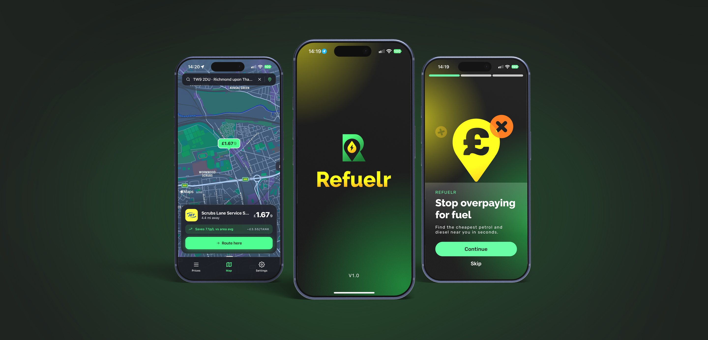
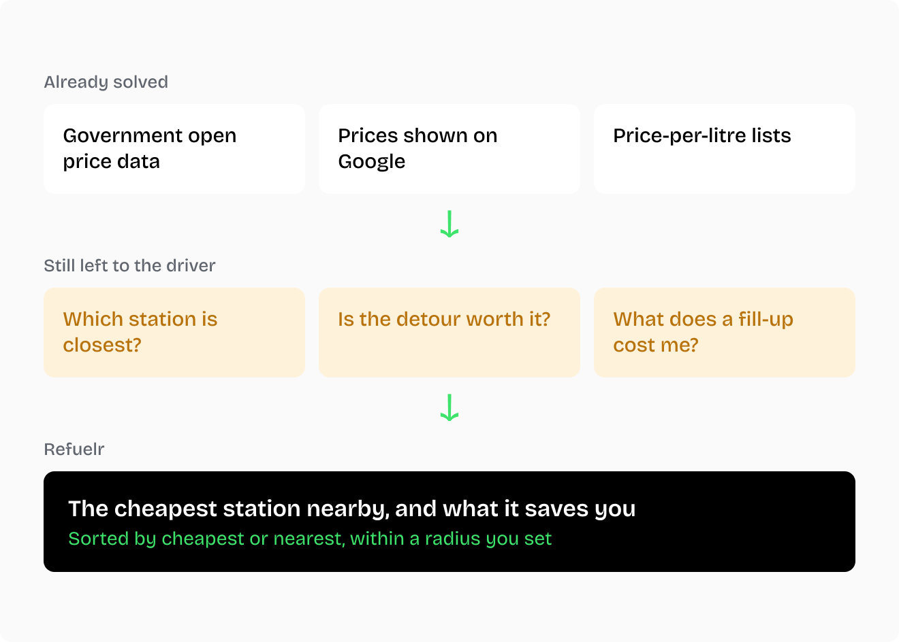

Refuelr – Cheapest fuel finder
- iOS App
- UI/UX
- Open Data
- AI Tooling

My Contribution
Owned
- Product, brand and build, end to end
- Scope: what shipped and what didn’t
- AI tools and delivery workflow
Led
- Every design decision, idea to App Store
- Testing with TestFlight users
- Data quality rules, for accurate prices
Impact
- One clear result for any UK postcode
- 8,166 stations covered from open data
- Real logos for 30 brands
The Problem
Fuel prices are public now. The government publishes them as open data, and they show up on Google. Seeing a price isn’t the hard part. Knowing which station is worth the drive is.
The cheapest station might be a long way off, and the nearest might cost noticeably more. What’s best depends on where you are, how far you’ll go, and what you drive.
Refuelr answers one question for the user:
Where’s the cheapest fuel that’s near me?
